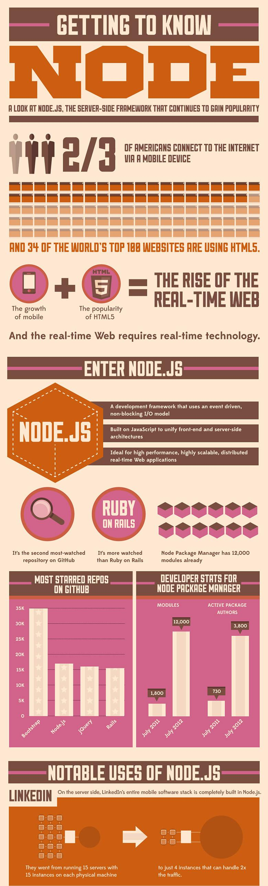
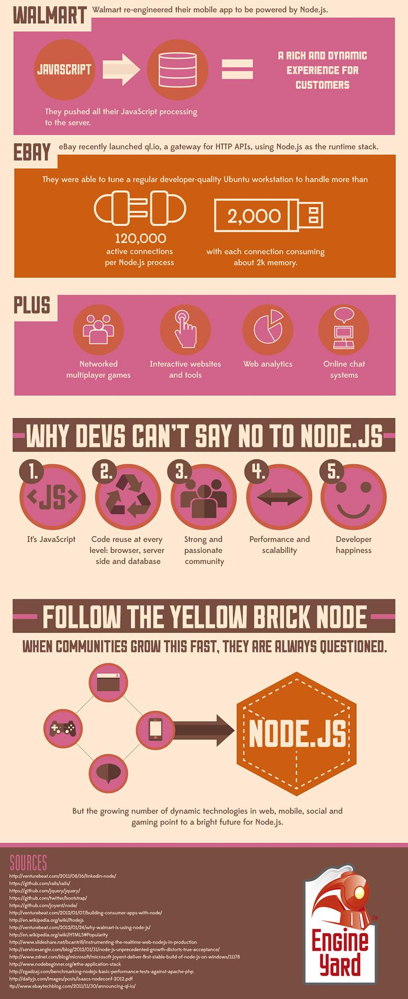

[번역] Getting to Know Node
Wednesday, January 9 2013 1:29 AMsitepoint.com의 Node.js 관련 Article 번역
원문 sitepoint.com의 Getting to Know Node
이번 글은 내용이 인포그래픽으로 되어 있어 이미지에 마우스 오버시 번역을 보여주고 있다.
오역 주의 오역을 발견하시면 꼭 알려주세요~ :-)
Getting to Know Node
사람들은 흔히 하나의 그림이 수천 단어의 가치가 있다고 이야기 한다. 그래서 우리는 여러분을 위해 약 만개 정도 단어의 가치가 있는 그림을 준비했다. 이 글은 Node.js의 개요에 대해서 인포그래픽 스타일로 보여준다. 이 인포그래픽은 Node가 무엇인지 설명하고 서버측 JavaScript 프레임워크가 정확하게 얼마나 인기가 있는지를 보여준다. 만약 여러분이 아직 Node에 열광하지 않고 있다면 거부할 수 없는 이유를 알려줄 것이다.
 
About Author

Juhoi Kim
blog: http://juhoi.github.io
twitter: @ByJuhoi
github: juhoi
모든 것은 나의 선택에 달려있다.